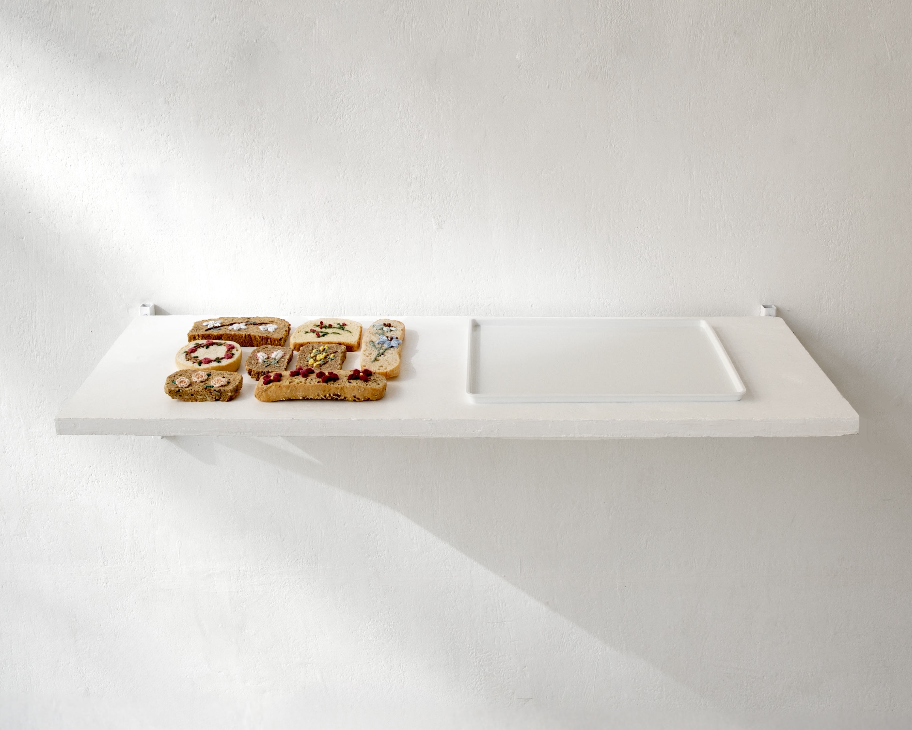

After What Remains
2025
Bread, yarn, tray, wooden shelf
100 x 34.5 x 20 cm

2025
Bread, yarn, tray, wooden shelf
100 x 34.5 x 20 cm
A clay pigeon is an artificial target designed to substitute for a living bird. Although it was created to protect living beings, its existence is fundamentally tied to destruction: it is meant to be struck by gunfire and shattered. In this sense, the clay pigeon is a material specifically designed for collapse, fulfilling its purpose only at the moment it breaks apart.
Tontauben: The Material State After Collapse I–III focuses on the form and material properties of the clay pigeon. The series explores different states of the object: its intact form before destruction, the moment of impact, and the traces that remain afterward. The repeated circular structures reveal the clay pigeon’s industrial and standardized geometry, while fragmented shards and recessed imprints record the absence of the object itself.
Originally intended to disintegrate in midair, the material is preserved here in a fixed state. Through this transformation, an object created for destruction ceases to function as a target and becomes a material trace. In doing so, the work exposes a tension between destruction and preservation, disappearance and memory.
This series draws attention to the persistence of matter, questioning what remains, what is remembered and preserved, and what continues to exist after collapse.